I'm going to try for a webcomic with a more complex plot. Not necessarily maudlin and emotional, but with a more developed plot. I wanted to steer clear from making the black ninja sarcastic and cool, like everyone else makes him. It turns him into some Sonic-the-Hedgehoggish character, which annoys me.
Anyway, I've made two comics thus far. The second one is much easier to read, because I enlarged the images (but not the text). Tell me what you think of it--especially the style. I can improve upon the images if need be, as I'm not yet fully proficient with Paint Shop Pro.
Enjoy:
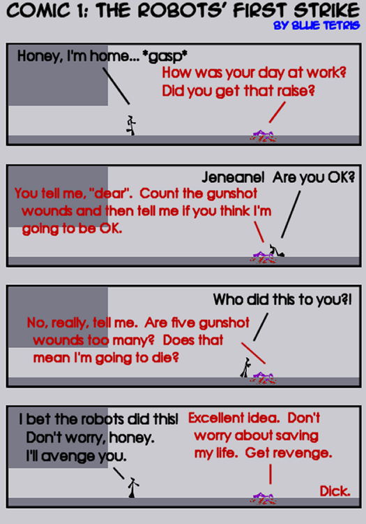
What happened to your promise to not have some sarcastic ninja dialogue?? No, it's fine, but I'm certain you can do better.
#111641 (forumer) 3 2005-11-27T22:22:00Z sweep Don't use red on that text. Too... bright.
The girl will always have to be pink.
What the male N said was funny, but the wife's wasn't.
I might do one of those love stories.

Quote: kirby, Nov 27 2005, 10:58 PM
What the male N said was funny, but the wife's wasn't.
Oh?
Here's number two:
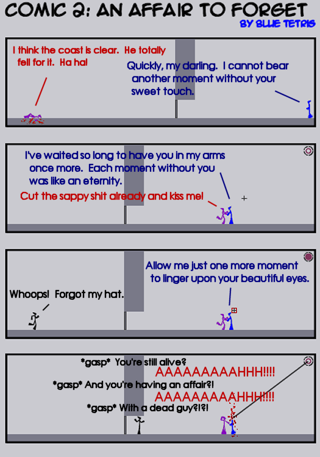
Ok, that was great.
The first wasn't.
This was.
Thank you for your time.
#111673 (forumer) 7 2005-11-28T01:19:00Z Guest (guest) Ah, this is the kind of potential I see in blue_tetris. Still, your promise to have varied and non-monotone personalities seems unfulfilled.
Oh, sorry. I wasn't logged in. Poop.
Well, I've done as much character development as is possible with two comics and limited dialogue.
#111691 (forumer) 10 2005-11-28T01:59:00Z brickman The second one was funny.
#111693 (forumer) 11 2005-11-28T02:01:00Z Maniac This is kinda good, except, ya know, it ain't in B&T. But very funny nonetheless.
This one needs no introduction.
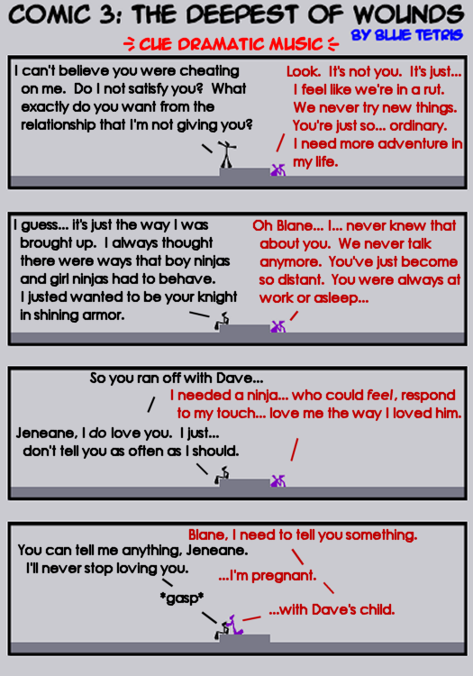
i have three words for that second comic:
el.
oh.
el.
#111707 (forumer) 14 2005-11-28T02:57:00Z Guest (guest) In comic 2, you said "the cost is clear". I am sure it is just a typo, but do you mean coast? Or is there some other saying that I am unaware of?
#111709 (forumer) 15 2005-11-28T02:58:00Z jflash This will probably be the first webcomic that I actually keep up with. SUSPENSE!
#111712 (forumer) 16 2005-11-28T03:04:00Z brickman The fourth wasn't funny at all.
#111714 (forumer) 17 2005-11-28T03:06:00Z jflash Fourth? I've only seen 3.
#111716 (forumer) 18 2005-11-28T03:22:00Z krusch I like these. They're all hilarious especially the last one IMO...
The first webcomic that I actually laughed at, good work.
#111722 (forumer) 19 2005-11-28T03:36:00Z Ryuk First of all, hahahhahahahhaahha.
Second of all,
Quote: bt @ comic 3
So you ran off with Dave...
Isn't that you're name, blue?
#111723 (forumer) 20 2005-11-28T03:38:00Z jflash Yeah, I think it is.
Heh, go Dave

I love these, continue them!
Comic 2 is supposed to read "The coast is clear". Just a typo. I'll make sure to look more carefully over these in the future.
Comic 4, which will be it for now:
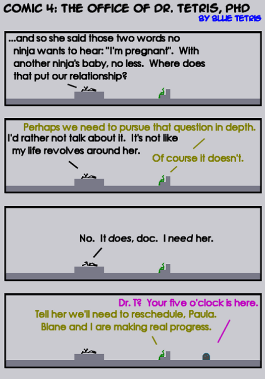
Exactly where this needs to be.

So he has a homicidal robot helper? But- aren't the robots evil? Is it annoying for me to point out insignificant plotholes? Can I have a pony?
#111737 (forumer) 25 2005-11-28T04:43:00Z Teedle N- a love story. With robots.
I like it. A plot away from the game is a good premise.
#111785 (forumer) 27 2005-11-28T10:12:00Z krusch Quote: The Daily Llama, Nov 28 2005, 02:43 PM
N- a love story. With robots.
haha, that is funny, extremely funny
I love these comics. More than any other comic. Ehhhh, and more than tuna fish. Unless there is mayonnaise mixed in the tuna fish.
Two comics for the price of one!
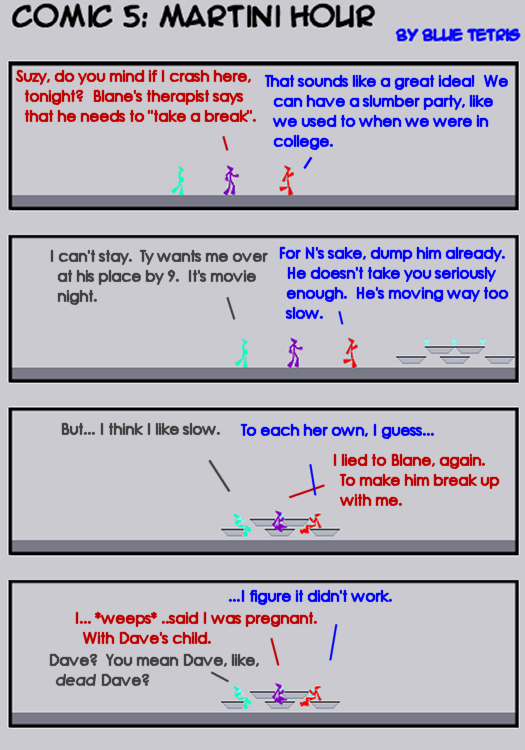
And the heart-wrenching conclusion:
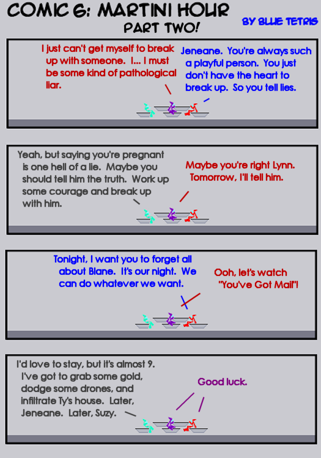
I only realized there were three ninjas there on the second read through...
Too confusing with the speech lines, but great comic.
That might be the flu talking though... *SNIFFLE*
Wow, I just got super confused, because when I looked at the speech lines the second time, the lines don't color coordinate to the female ninjas. Oh no! What will become of the world? Well I guess it doesn't really matter which one is which, because they are just graphical representations of the true characters of Jeneane, Lynn and Suzy. So it doesn't matter if I'm confused.
#111846 (forumer) 32 2005-11-28T18:36:00Z shoftee LOL! I love these! They're hilarious... well maybe not all of them, but still

.
Oh, Tetris, you should try PNG, it's much better than JPEG.

TS
Quote: Toshosoft, Nov 28 2005, 06:36 PM
Oh, Tetris, you should try PNG, it's much better than JPEG.
Will do!
EDIT: Wow! You're right. PNG format makes a big difference. It's much clearer. All have been converted to PNGs.
Is the fact that they talk in different colors too confusing?
Number 7, super plot development!
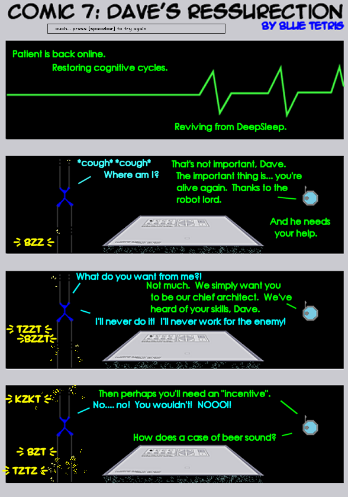
Good sparks!
I like it.
Please make more soon.
Now, can you please make a chart of characters and the colors? And the color of their speech please?
god damn that last one was hillarious. someone should animate these.
Please, don't animate this.
It'd just be painful to watch. And it'd drive away members like the last two tries.
Like I have the time to animate these. Besides, not much action takes place from frame to frame.
#111916 (forumer) 39 2005-11-28T22:36:00Z Maniac "Chief Architect"
Secure a carton of Ben & Jerry's ice cream before reading this one:
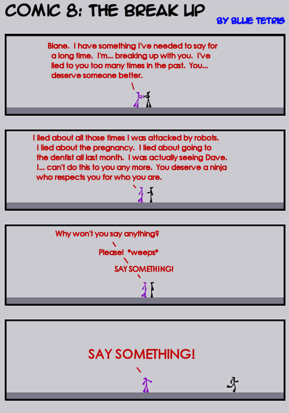
#111922 (forumer) 41 2005-11-28T22:48:00Z Mark lol. Very nice.
That reminded me exactly of the scene in Lost where the chinese girl reveals that she speaks english.
#111931 (forumer) 42 2005-11-28T23:16:00Z KinGAleX I really like that last panel. The realism of it is quite scary. Imagine if that happened to you - I bet you'd be speechless.
Very dramatic.
A lot like the soaps I watch.
Mr. Tetris, you are a master. If you don't continue these, remember, I have a knife Nintendo DS in my house.
Yeah, that's right.
#111943 (forumer) 45 2005-11-28T23:25:00Z jflash It's kinda confusing. I like it, don't get me wrong, but why would Jeneane lie to Blane about being pregnant with Dave's child?

Quote: jflash, Nov 28 2005, 11:25 PM
It's kinda confusing. I like it, don't get me wrong, but why would Jeneane lie to Blane about being pregnant with Dave's child?
She's a pathological liar. This will become more and mroe obvious as the series continues. She just feels more comfortable lying than telling the truth is all.
(This feels like classic soap opera chat. Heh heh!)
#111953 (forumer) 47 2005-11-28T23:41:00Z jflash Yeah. Well, like I said, this is the first webcomic I've actually followed, and I'm enjoying it. It is really... deep, though.
pathological lying is a scary thing.
This comic involves Lynn (the bright teal ninja girl who talks gray) and Ty (the brown ninja guy who talks midnight red). The thwump is a TV.
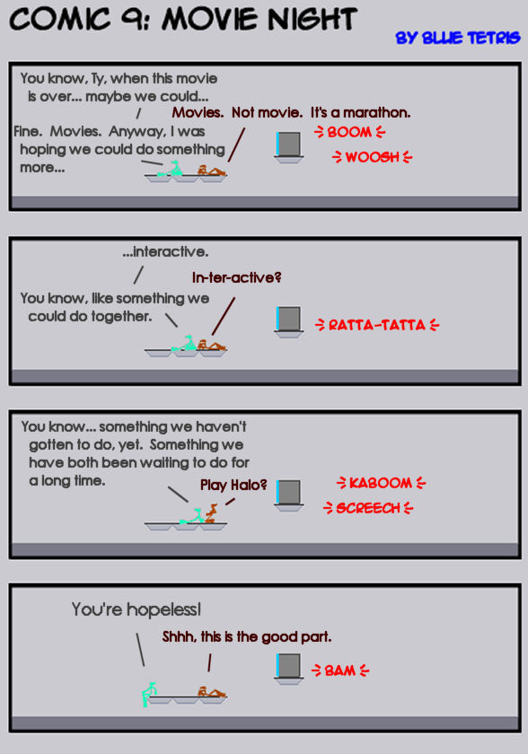
#111989 (forumer) 51 2005-11-29T01:00:00Z jflash That's pretty good. Not quite as deep as the others, but a little mindlessness is good. PLus, it helps improve our (or atleast mt) knowledge of Lynn and Ty individually and as a couple.
#111991 (forumer) 52 2005-11-29T01:03:00Z Baraba Hands-down my favorite N-comic. This from the guy who watches Hispanic soap-operas all night. (No matter how hard I try I always manage to go through one, maybe two, kleenex boxes)
A Blane/Dr. Tetris comic. Blane is black with a black voice. Dr. Tetris is green with a dark yellow voice.
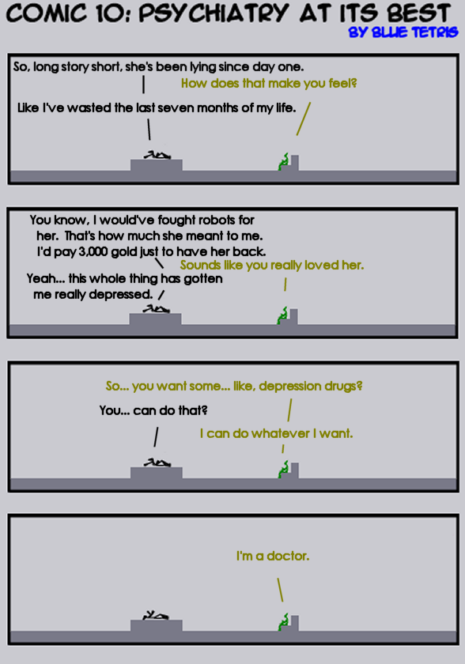
"I can do whatever I want. I'm a doctor."
B-E-A-utiful.
I love these comics SO much! Especially the last two. I thought the character posing for comic 9 was amazing. Good job, and please keep it up. No offense to the other comics, but I don't read them, and I read this one.
I simply love posing the N figures. It's like being a puppeteer, in a strange way. You have to figure out how to convey the most emotion with those little figures--especially when nearly all of the characters are ninjas. It becomes quite a rewarding task. Thank you for noticing, Aries.
Comic 11, featuring
Dave (blue ninja guy who talks in ice-blue--also in comics 2 and 7) and
Dave's captor, a seeker drone (who talks in neon green--also in comic 7):
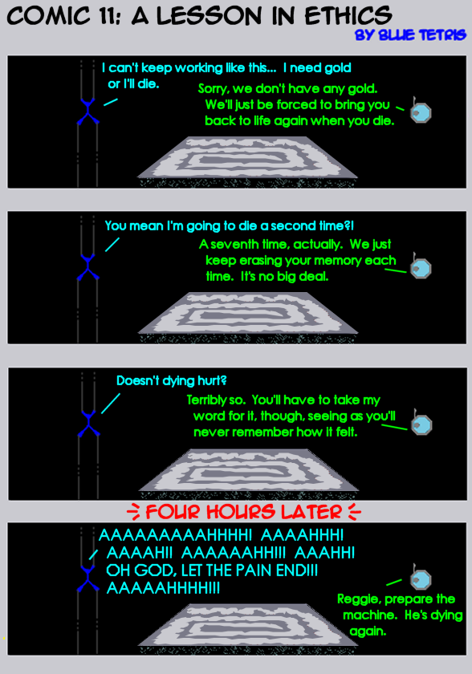
And to top it off, MTI, the ninjas' bane, is in the background. Nice.
MTI in the background is truly art.
This reminds me of the sixth day, with Arnold schwartzenager.
#112058 (forumer) 59 2005-11-29T02:33:00Z brickman Hahaha, very, very good.
#112071 (forumer) 60 2005-11-29T03:14:00Z Ryuk I love this story. It's awesomeful. Good job Dr. BT.
Just for laughs. Number 12 introduces a new character for humorous purposes.
This comic includes
Jeneane (purple ninja girl who talks in dark red--in numerous episodes, including the first three, you should probably know her) and
Suzy (red ninja girl who talks in blue--also in episodes 5 and 6).
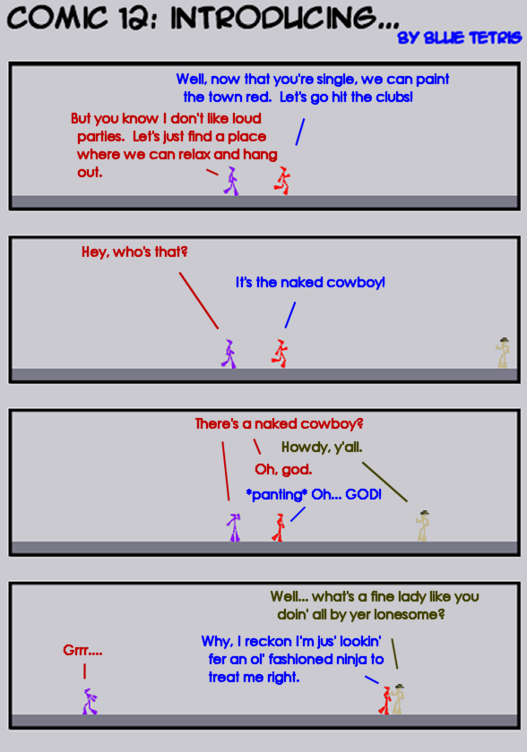
#112081 (forumer) 62 2005-11-29T03:38:00Z jflash Needs more to back it up, as BW said. Also, it seems like your rushing. Don't do that! We can wait a little longer and get truly awesome comics.
Not that these aren't awesome, it's just that I've noticed the quality slipping recently...
And lucky number 13. This is it for now.
This one features Blane, the black ninja who talks in black.
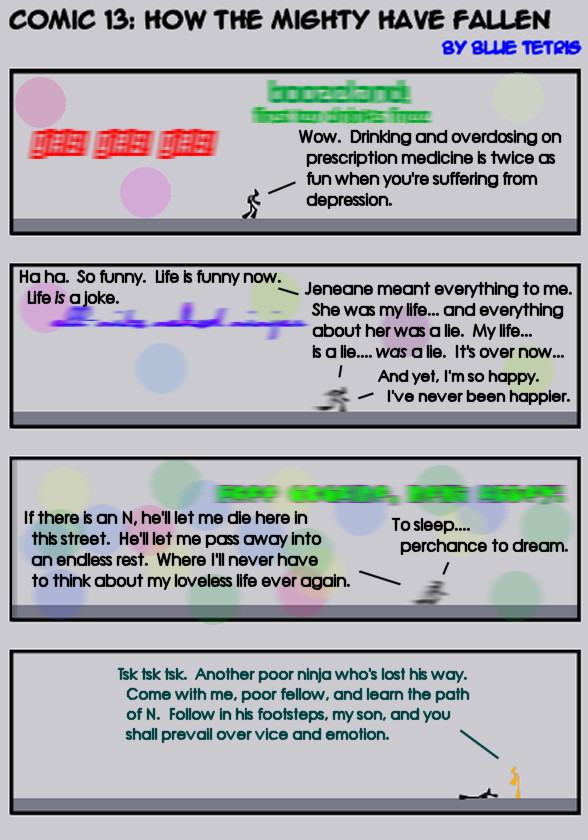
Great graphics on that one. I've thought of doing a comic - The Day the Tiles Went Wacky... but never got the energy.
I love these.
You have interesting wordplay. Me likes. But you need to pace yourself. You seem okay right now, but I know that schedules are as hard as something really hard. Like a diamond. Dipped in hard stuff.
^has lowered your writing talent by 10%
that last one was awesome...
#112152 (forumer) 67 2005-11-29T10:48:00Z krusch Yes, these are hilarious!
My mum reads them!
seriously, she loves them.
#112259 (forumer) 69 2005-11-29T19:25:00Z Levinous I made my 'love' comic on how N and female N met, nothing much about Blue's comics. But mine isn't as good as his I predict. I don't know whether to post it in here or elsewhere...
His are more lifelike by far.

EDIT: Comic 13 is funny how you've put faded advertisements in it, 'yes! yes! yes!', 'broadband', and 'get crisps, text seley!' or summin'.
And 13 is UNlucky...
I believe the last one says "free cocaine, next alley" quite humorous, and a cliffhanger ending.
Comic 14! This one features:
Jeneane, who talks in dark red. Also in comics 1-3, 5, 6, 8, and 12.
Lynn, who talks in dark gray. Also in comics 5, 6, and 9.
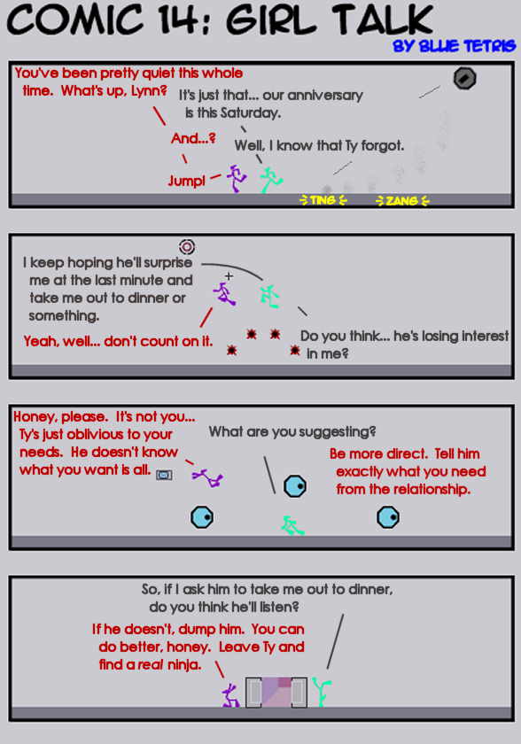
EDIT: The signs in the city for Comic 13 were "girls! girls! girls!", "boozeland, first ten drinks free", "all-nite naked ninjas", and "free cocaine, next alley!".
#112279 (forumer) 72 2005-11-29T21:12:00Z Levinous That was funny, talking out their conversations while dodging robots/drones, and doing the poses when they got to the door.
Moved by blue_tetris's request.
Thirteen was definitely the best, visually.
These are very captivating, and fun to read. In fact, I'm truly getting into these, feeling the emotions the ninjas are feeling. Fourteen was funny - I totally understood what you were going for and it worked really well. My one complaint it that when they're jumping, I think it'd look better if you just used the ninja's jumping pose in the real game.
Other than that, the posing in this comic is fantastic. Good job.
This one has a little suggestive dialogue. It's necessary for character development, though.
Comic 15 features:
Jeneane, who talks in dark red.
Dr. Tetris, who talks in dark yellow. Also in comics 4 and 10.
Paula, Dr. T's floorguard assistant who talks in magenta. Also in comic 4.
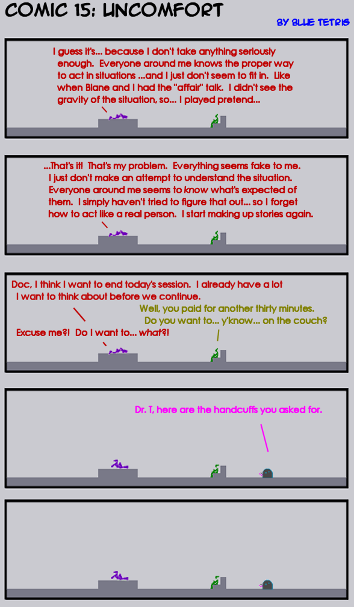
#112340 (forumer) 76 2005-11-30T00:56:00Z Teedle Lollin' long and hard at that...
Along with the rest. This is truly great... really, really good.
*Me loves it*
(Actually, *me loves comic as a whole, despite a few episodes that didn't raise a smile or a thought- provoked "hmmmm"*, but what can you do? You get bad apples in the best crop. Overall, I love this. May your comic live long and prosper!)
Comic 16. (Thanks NM.)
This comic features:
Blane, who became depressed when Jeneane left him. He wandered the streets and was picked up by a monk in comic 13. He talks in black.
Master Orange, who refers to Blane as Black, a ritual often observed by the followers of N. He was last seen in comic 13, picking Blane up off the street. He talks in dark purple during this comic.
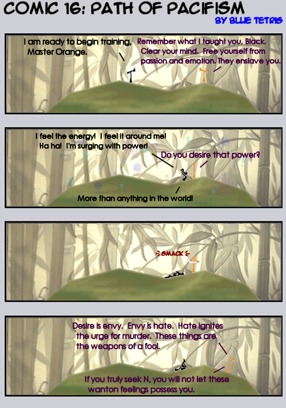
By the way, accidentally in your post you wrote that that was episode 15, while it was actually 16.
#112402 (forumer) 79 2005-11-30T03:25:00Z jflash Terrific as usual. Not incredibly in-depth, but I have a feeling it'll get better in future comics.
#112405 (forumer) 80 2005-11-30T03:30:00Z KinGAleX Hehe. And definitely not a copy of Yoda. Lovin' the background in that one, blue.
Comic 17.
Starring:
Dave, the blue ninja guy who talks in blue. Also in comics 2, 7, and 11.
Dave's Captor, the seeker drone who talks in green. Also in comics 7 and 11.
Suzy, the red ninja girl who talks in blue. Also in comics 5, 6, and 12.
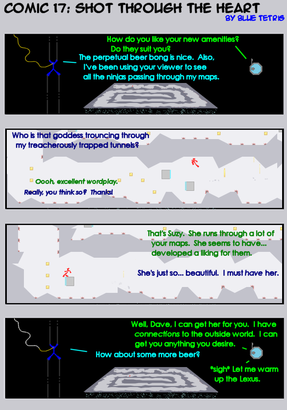
Methinks of my coffeebeer episode.
You Damn Well better make more of these comics!These are great!I love the Story Line!
heh heh. Warm up the lexus, classic. Keep going with the good comic!
Edit: Why was this moved to BnT?
#112577 (forumer) 85 2005-11-30T20:46:00Z 7! I love the comic, sharp, sensational, witty, smart humor.
Not like many other N comics, they look rather immature and crappy compared to yours, BT.
LONG LIVE THE N: A Love Story COMIC SERIES!
Here's just one suggestion.
It would be better if you put like puns in it, (meaning puns of players of N and forumers, NUMA, etc.).
I like the one with the Orange best now. Very good show. It'd be cool if all the characters/themes for the comics came together for a smashing climax near the end of these, but I'm sure you know best.
#112607 (forumer) 87 2005-11-30T22:35:00Z brickman I'm loving this comic. I think I like this better than any of the others, including the big three of old.
Comic 18.
This comic features:
Lynn, the ninja girl who talks in dark gray. She was also in comics 5, 6, 9, and 14. She's a friend of Suzy and Jeneane (the two other girl ninjas).
Ty, the ninja guy who talks in midnight red. He was only in comic 9, though his name has been mentioned numerous times by Lynn and her friends.
Lynn and Ty are having an anniversary this Saturday. In comic 14, Jeneane told Lynn that Ty would be too air-headed to remember the annviersary...
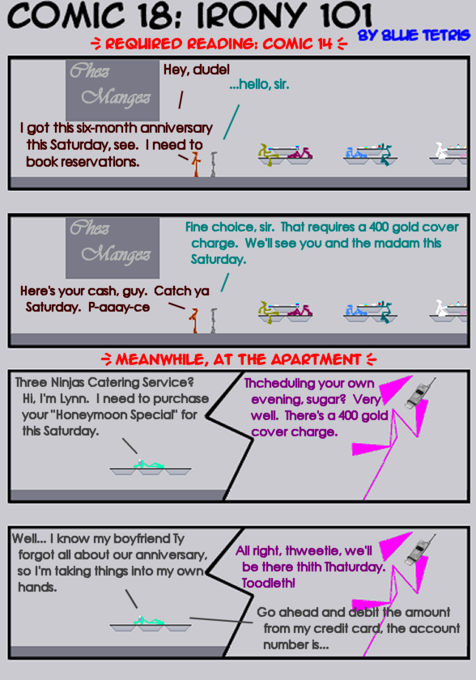
#112629 (forumer) 89 2005-11-30T23:39:00Z Patrick Hah! This comic officially has everything
#112631 (forumer) 90 2005-11-30T23:42:00Z Teedle Something occured to me, as I saw you'd posted a new comic here and I wash pushed into an almost orgasmic state of bliss as I saw the bolded heading of 'comic 18', one I had not yet read...
This is a comic about a Ninja called N.
It's a tiny flash freeware game, made by Mare and Raigan.
And it is very, very pathetic that such detailed story lines and amazing comedy should be crammed into a comic strip about... well... a tiny freeware flash game not many people know about.
So, I'm just wondering how pathetic that makes me, that the sight of one of your comics 'lights up my day' more than a 3000V lightbulb a few inches from my face.
-----------------------------------------------------------
For those of you were confused by all that, I was simply complimenting Blue Tetris on the comic.
That was...
*sniff*
It was...
*cries*
IT WAS GLORIOUS!
ELL-EM-EFF-AYE-OH!!!!!!!!!!!!!!!!!!
#263676 (forumer) 93 2006-11-06T01:02:00Z shoftee Nice, effing nice, dude!
Keep it up, I feel the end is near!
TS
#263712 (forumer) 94 2006-11-06T02:15:00Z scythe33
Awesome comics, dave.

A-A-AMaZiNG!
You are just about to reach comic
100! It is
10²! It is
50*2! It is a whole lot of work, indeed... What an outstanding accomplishment!
These comics rock so much!

#265279 (forumer) 97 2006-11-09T02:59:00Z Sketch He he,
The transformation of David Bowie, into .. Kablizzy!
#265430 (forumer) 98 2006-11-09T13:51:00Z JeCa Quote: Sketch, November 09, 2006 04:59 am
The transformation of David Bowie, into .. Kablizzy!
So that's why I recognised the last guy so much.

Comic 100.
This comic features:
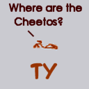
Enjoy.
Attachment (lost): post-40-1163109565.png